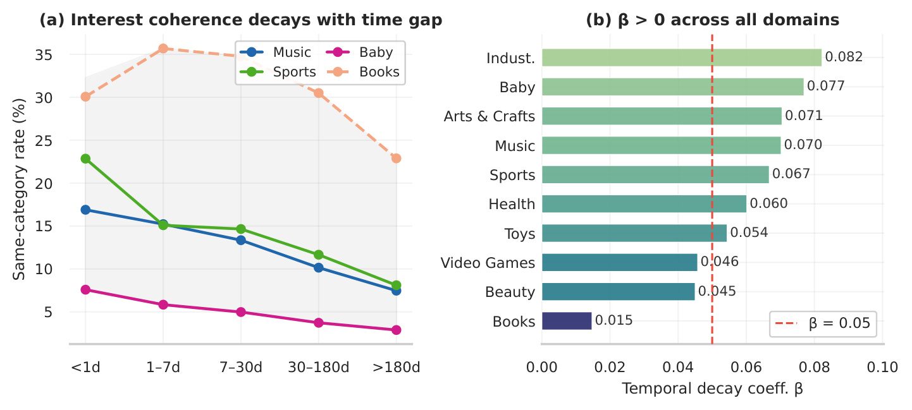
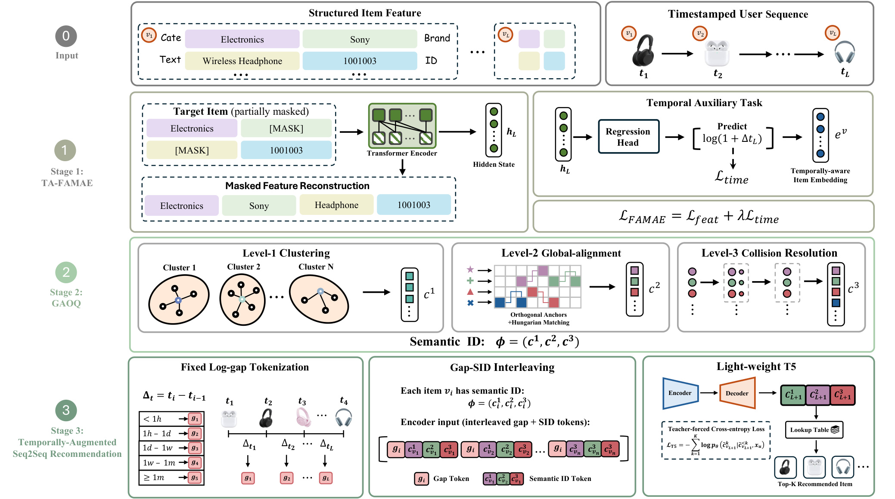
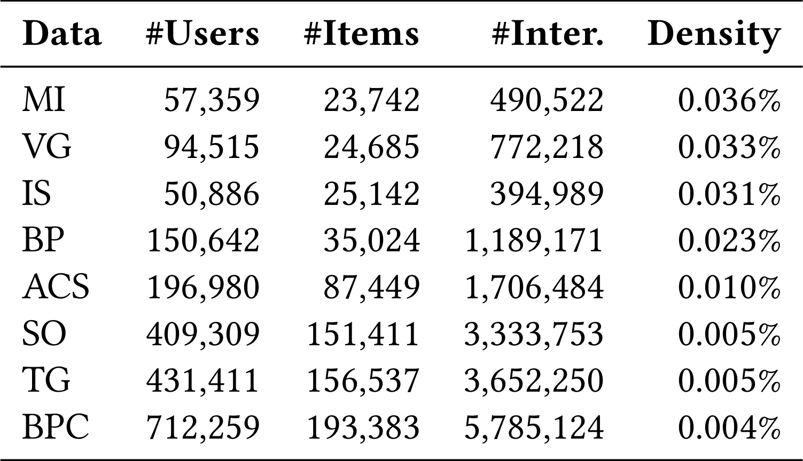
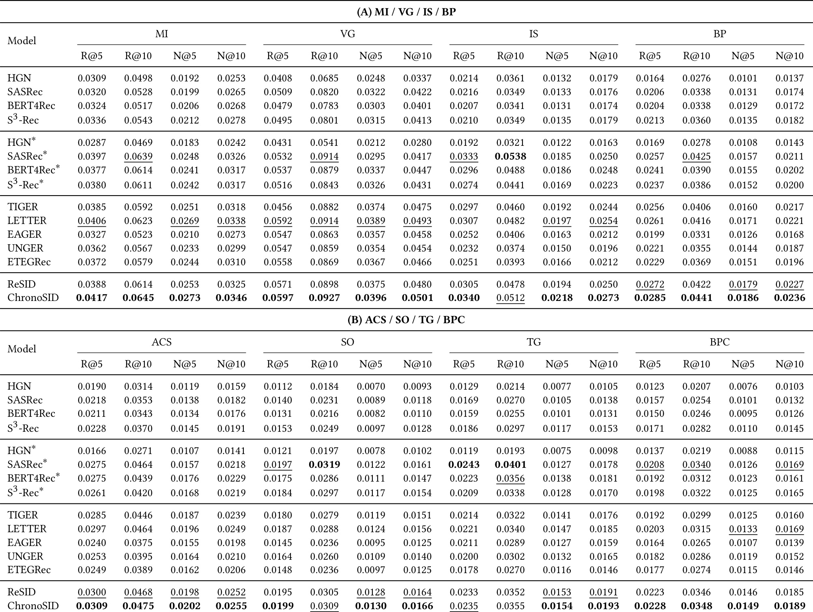
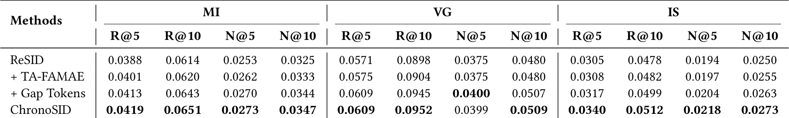
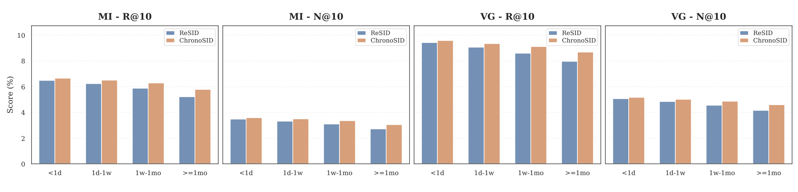
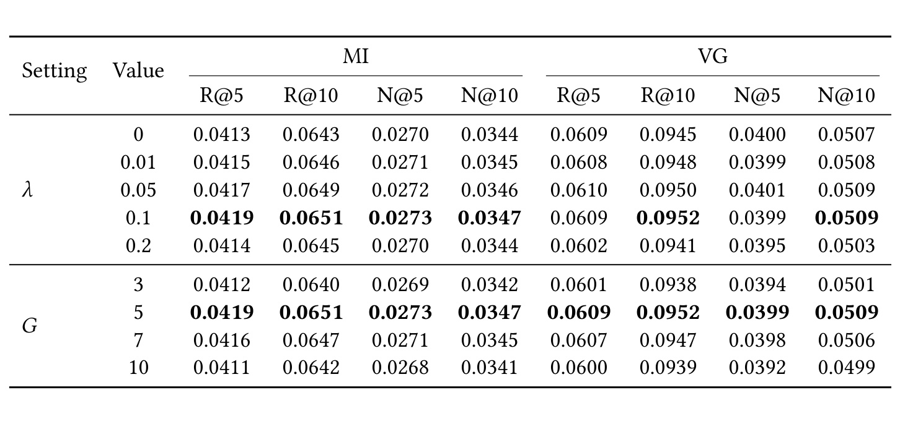
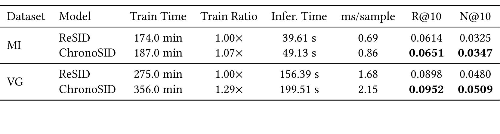
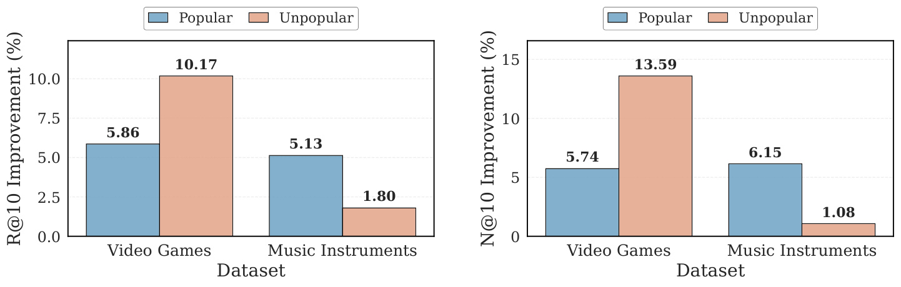
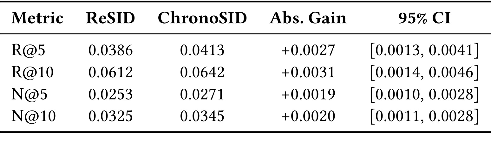

Beyond Item Order: Temporal Gap Tokenization for Generative Recommendation with Semantic IDs / ChronoSID：面向语义 ID 生成式推荐的时间间隔标记化
ChronoSID 讨论的是语义 ID 生成式推荐中的一个很具体但容易被忽略的问题：模型把用户历史写成一串 item code 后，往往只保留“先买了什么、后买了什么”，没有把两次行为之间隔了多久交给生成器。论文一作 Chengkai Huang 的主机构为 University of New South Wales，同时也标注 Macquarie University；合作作者来自 Independent Researcher、Macquarie University、CSIRO's Data61 和 University of New South Wales。论文入口为 arXiv:2607.03918。事实包与 arXiv 页面未发现独立代码或项目页，本笔记只按论文正文和图表解释方法与证据。
现有 semantic-ID generative recommender 通常把用户历史构造成静态 item identifier 序列，连续交互之间经过了多久没有进入 generative input；但交互间隔本身能提示兴趣是否连续、偏好是否漂移。论文要解决的核心缺口是：怎样把 inter-interaction time gaps 纳入 SID-based generative recommendation，同时不牺牲 SID 生成范式的紧凑性和可扩展性。
1. 背景和问题
语义 ID 生成式推荐的基本吸引力在于，它把“在巨大 item vocabulary 上打分”改写成“生成一个较短的离散 code tuple”。TIGER、LETTER、EAGER、UNGER、ETEGRec 到 ReSID 这条线都在尝试让 item identifier 更紧凑、更有语义、更适合 seq2seq 生成器预测。ChronoSID 并不否定这条路线，反而把 ReSID 当作最直接基线：item 表示学习、语义量化、T5 式生成器这三段 pipeline 仍然保留。它指出的问题是，pipeline 一旦把每个 item 固定成 SID tuple，用户历史就很容易只剩下 SID_1, SID_2, ... 的顺序信息。两个用户可能有完全相同的购买序列，一个是在同一天内连续浏览，另一个是隔了一个月才回到同类商品；如果模型输入相同，生成器就无法区分短期兴趣延续和长期偏好漂移。
论文把这个缺口称为 temporal blindness。这个词在推荐系统语境里并不是泛泛地说“时间重要”，而是特指 SID-based generative recommendation 中的输入表示盲点：item tokenization 已经高度工程化，输出空间也被压缩成离散 code，但历史行为之间的 elapsed time 没有成为 encoder token。传统 time-aware sequential recommendation 早就会用时间间隔、recency 或时间衰减来建模偏好变化；可是这些做法多发生在 item-ID encoder、retrieval model 或 attention bias 里。ChronoSID 要回答的是更窄的问题：如果目标系统已经采用 semantic ID 生成范式，能否把间隔信号变成和 SID token 同等地位的符号输入，而不是另起一套动态 item representation。

Figure 1 是论文的动机证据。左侧用 Amazon 商品域中的同品类连续购买率近似衡量 interest continuity：间隔越短，下一次交互仍落在同一类目的概率通常越高；间隔拉长后，同类率下降，说明单靠 item 顺序可能高估了“上一件商品对下一件商品”的短期牵引。右侧拟合 temporal decay coefficient，不同商品域的系数均大于 0，虽然大小不同，但方向一致。这个图没有直接证明 ChronoSID 会提高 Top-K 指标，却证明“时间间隔不是噪声”这一前提：如果 SID 序列只记录 item code，图中这些跨域可观察到的 decay pattern 就被系统性丢弃。更重要的是，图中两个子图来自同一个问题链条：左侧给出行为现象，右侧说明现象在多个域中存在，因此它适合放在背景章而不是方法章。
从任务形式看，ChronoSID 关心的是 timestamped sequential recommendation。每个用户历史不是单纯的 item 序列，而是按时间排序的 (item, timestamp) 序列；模型需要根据历史预测下一个 item。SID 方法会先把每个 item 映射为多个离散 code，例如三层 semantic ID，然后让 decoder 逐层生成目标 item 的 code tuple。这样的输出很节省，因为生成器只需要生成三个 code token，再通过 lookup table 找回 item；但输入端如果只拼接历史 item 的 code tuple，v_i 和 v_{i+1} 之间隔了一小时还是一个月都不会改变 token 序列。ChronoSID 的贡献因此不是重新设计一个全新的推荐框架，而是在既有 SID pipeline 中放入两个时间入口：表示学习阶段让 item embedding 保留时间可预测性，生成阶段把离散 gap token 插入 encoder input。
这篇论文值得看，是因为它把“时间”处理成一个很轻的符号增强，而不是把模型复杂度推高到另一个系统范式。对工程系统而言，这种设计有两个现实好处。第一，gap token 只增加 encoder 输入长度，不改变 decoder 目标，也不要求输出空间扩张；这意味着 beam search、SID lookup、去重和 Top-K ranking 的服务路径基本不变。第二，论文刻意保持 GAOQ 量化阶段与 ReSID 一致，把变量集中在 temporal regularization 和 gap-token interleaving 上，实验解释比较干净。局限也随之而来：固定 log-scale bins 是否适合所有域、时间间隔是否受平台活跃周期影响、长间隔样本是否同时伴随 item popularity 或用户活跃度偏差，都需要在实验章里谨慎看。
2. 方法
2.1 问题形式化与 Gap-SID 输入序列
论文先把用户历史写成带时间戳的序列，而不是只写 item ID。这一点决定了 ChronoSID 的时间信号来自真实历史行为间隔，而不是额外构造的静态 item 属性。若用户 u 的历史长度为 L，原始观测先被定义为下面的 timestamped sequence：
符号解释：v_l 表示第 l 次交互的 item，t_l 表示该次交互的时间戳，序列按时间升序排列。Sequential recommendation 的目标是根据 S_u 预测 v_{L+1}。这一步把“下一次会交互什么”明确成 timestamped history 条件下的预测问题，也为后面引入 Delta t_l 留出位置。在 SID-based generative recommendation 中，模型不直接在全量 item 集合上分类，而是为每个 item 构造一个短 code tuple：
符号解释：K 是 semantic ID 的层数，c_v^k 是 item v 在第 k 层 codebook 中的离散 code。ChronoSID 的实现沿用三层 SID，因此后文多数公式里 K=3。这个形式化很关键，因为它把论文的问题限定在“生成目标 item 的 code tuple”上，而不是回到传统 item-level scoring；也就是说，时间信息必须服务于 code generation，而不是改成另一个 full-softmax 推荐器。
时间间隔被定义为连续历史交互之间的差值。论文只使用历史内部的相邻间隔，不把测试目标侧间隔泄漏给模型；这样训练输入中的时间 token 仍然是可在线获得的行为上下文：
符号解释：Delta t_l 是第 l 次交互与前一次交互之间的 elapsed time；Disc 把连续时间映射到离散区间；g_start 是第一条历史的特殊 token，因为第一条历史没有前序时间。论文默认使用五个真实 gap bins，阈值为 1h, 1d, 1w, 1mo，对应 <1h、[1h,1d)、[1d,1w)、[1w,1mo) 和 >=1mo。这个离散化故意采用粗粒度 log scale，避免把低频长间隔切成过稀疏的类别。随后，历史输入不再是纯 SID 序列，而是 gap token 与 SID tuple 交错：
符号解释：x_u 是 encoder 看到的 temporally augmented input；每个历史 item 前都有一个 gap token。学习目标仍然是生成下一个 item 的 SID：p_theta(Phi(v_{L+1}) | x_u)。这个改动的核心不是让 item ID 本身随时间变化，而是让同一串 SID 在不同交互节奏下形成不同的 encoder context。 训练和推理时，gap 只作为条件信号存在，decoder 仍然生成目标 item 的 semantic code，这保证了 ChronoSID 与 ReSID 的 lookup 和 beam search 路径保持可比，同时也让实验中“同一量化器、不同输入上下文”的比较更干净。

Figure 2 把整个方法画成三段。第一段 TA-FAMAE 在结构化 item feature 上做 masked auto-encoding，同时加一个时间间隔回归头，让目标位置 hidden state 不只恢复被 mask 的类目、品牌、文本或 ID 字段，还要预测与前一次交互之间的 log gap。第二段 GAOQ 与 ReSID 保持一致，把冻结后的 item embedding 转成三层 semantic ID；图中 Level-1 clustering、Level-2 global-alignment 和 Level-3 collision resolution 说明 code tuple 仍然是 recommendation-native tokenizer 的产物。第三段才是最显式的 temporal augmentation：固定 log-gap token 被插入每个 item SID tuple 前面，轻量 T5 encoder 看到的是 gap 与 code 交错的序列，decoder 仍以 teacher forcing 生成三层目标 code。图中损失项的位置也很重要：L_TA-FAMAE 属于表示学习阶段，L_T5 属于生成推荐阶段，两者不是同一个训练目标的简单加权。
2.2 TA-FAMAE：在表示学习阶段加入时间可预测性
TA-FAMAE 继承 ReSID 中 field-aware masked auto-encoding 的思路。每个 item 有 F 个结构化字段，例如 title、category、brand、identifier。训练时随机 mask 目标 item 的部分字段，用 Transformer encoder 结合历史上下文和未 mask 字段产生目标位置表示 h_L，再在对应字段空间中恢复被 mask 的字段值。论文把字段级恢复写成余弦相似度 softmax：
符号解释：E_f 是字段 f 的候选 embedding 表，s_f 是可学习温度，M 是被 mask 的字段集合，w_f 是字段权重，L_CE 是交叉熵。这个目标让 item representation 保留结构化特征语义，也是后续 GAOQ 量化的输入基础。它仍然是 ReSID 风格 tokenizer 的主干任务，因此 ChronoSID 在第一阶段不是放弃语义字段，而是在语义恢复之上追加时间可预测性。
ChronoSID 加入的时间辅助任务发生在同一个目标位置 hidden state 上。它不是预测下一个 item 的时间，也不是给 decoder 提供未来时间，而是预测目标 item 与其前一个历史 item 之间的间隔。这样做可以让 h_L 在恢复字段语义之外，对行为节奏保持敏感，对应公式为：
符号解释：w_g 与 b_g 是线性回归头参数，hat z_L 是预测的 log interval，lambda 控制时间辅助损失强度。论文默认 lambda=0.1。TA-FAMAE 的作用是 representation-level regularization：它要求 item 表示在恢复结构化字段之外，也包含一点可预测交互节奏的信息。 但它不会让 item embedding 变成用户动态状态；训练完成后，每个 item 仍被抽取为确定性 embedding e_v，然后冻结进入语义量化。这个边界值得注意，因为它解释了为什么消融中 TA-FAMAE 单独收益较小：时间信号只间接影响 item tokenizer，不直接进入 seq2seq encoder。
2.3 GAOQ 语义 ID 保持不变以隔离时间因素
第二阶段使用 ReSID 的 GAOQ。ChronoSID 在这里没有引入新算法，是有意为之：如果量化器也变化，就很难判断提升来自更好的 tokenizer 还是时间建模。GAOQ 先把 item embedding 分成第一层粗 cluster，再在每个粗 cluster 内做第二层 sub-cluster，并用全局正交 anchor 对齐本地 sub-cluster 的残差方向。三层 SID 形式为：
符号解释：c_v^1 是粗粒度 cluster code，c_v^2 是经过 global alignment 的子簇 code，c_v^3 用于解决相同前缀下的碰撞。Level-2 的核心是对每个 Level-1 cluster 求一个置换，让本地残差方向和共享 anchor 对齐：
符号解释：mu_j^(i) 是第 i 个粗 cluster 内第 j 个 sub-cluster centroid，mu^(i) 是粗 cluster centroid，r_j^(i)=mu_j^(i)-mu^(i) 是残差方向，q 是全局正交 anchor，sigma 是对本地 sub-cluster 索引的匹配置换。这个式子用 Hungarian matching 找到对齐方式，使第二层 code 在不同粗 cluster 中具有更接近的残差语义。ChronoSID 保留这一段，意味着它的“时间增强”不是靠改 codebook 数量、code depth 或碰撞处理来取得的；与 ReSID 比较时，tokenizer 的大结构是控制变量。
2.4 Gap Token Injection 与 T5 生成器训练/推理
第三阶段是论文最直接的改动。GAOQ 产生的三层 code 先被 remap 成全局唯一 token，避免不同 code level 的数字冲突；随后系统为 gap token 额外分配 vocabulary index。论文写作中先定义 rho_k，再定义 temporal token set 和映射 psi，最终得到真正传给 T5 encoder 的序列：
符号解释：tilde c_v^k 是 remapped semantic ID token，delta_l 是 vocabulary-level gap token。每个历史 item 原来贡献三枚 SID token，现在贡献一枚 gap token 加三枚 SID token，因此 encoder 长度从 3L 增至 4L。这个成本只发生在 encoder 侧；如果线上服务中历史长度很长，延迟和显存压力仍然需要评估，不能只看精度提升。
Decoder 的目标没有变化，仍然逐层生成目标 item 的三层 semantic ID。这个约束非常重要，因为它把新增成本限定在 encoder 条件上下文中，避免因为目标空间改变而影响与 ReSID 的公平比较：
符号解释：K=3，tilde c_{v_{L+1}}^{<k} 表示 decoder 已经生成的前序 code，x_u 是含 gap token 的 encoder input。推理时用 per-level beam sizes [50,50,50] 生成候选 code tuple，再通过 semantic ID lookup table 映射回 item；无法命中的 tuple 被丢弃，重复 item 保留最高 generation score。这个设计的优点是服务接口稳定：从外部看，ChronoSID 仍然是“给历史、生成 SID、lookup item、返回 Top-K”；但从 encoder 内部看，历史已经不再是静态 code 串，而是带有行为节奏的 code 串。
3. 实验结果
论文实验围绕七个问题展开：整体性能、两个时间组件的贡献、长间隔场景、时间超参敏感性、效率开销、热门/非热门 item 上的表现，以及生成 SID 候选本身是否更准确。数据采用 Amazon-2023 review 的八个商品域，leave-one-out 评估，最后一次交互做测试，倒数第二次做验证。指标是 Recall@5/10 和 NDCG@5/10。传统序列模型包括 HGN、SASRec、BERT4Rec、S3-Rec 及加入 side information 的 starred variants；生成式推荐基线包括 TIGER、LETTER、EAGER、UNGER、ETEGRec 和 ReSID。ChronoSID 与 ReSID 共享三层 SID、GAOQ 配置、轻量 T5 backbone 与 beam search 设置，以便隔离时间建模效果。

Table 1 给出实验域规模。MI 有 57,359 个用户、23,742 个 item 和 490,522 条交互，密度 0.036%；VG 有 94,515 个用户、24,685 个 item 和 772,218 条交互，密度 0.033%。更大的域如 SO、TG、BPC 用户和 item 数显著增加，但密度只有 0.005% 到 0.004%。这个表对理解结果很重要：稀疏域中，短期共现和 item popularity 都可能更不稳定，语义 ID 生成器如果只看静态 item code，很容易在长尾 item 或长间隔用户上缺少行为上下文。ChronoSID 选择这些域而不是只在小数据上验证，说明作者至少想覆盖从中等稀疏到极稀疏的推荐场景。需要注意的是，所有数据都来自 Amazon review，时间间隔模式可能受电商评论行为影响，不能直接等同于短视频、广告或新闻流的曝光点击序列。
3.1 主结果：ChronoSID 相对 ReSID 的稳定增益

Table 2 是 RQ1 的核心证据。ChronoSID 在八个 Amazon 域中整体优于 SID-based generative baselines，尤其是最直接的 ReSID。以 MI 为例，ReSID 的 R@5/R@10/N@5/N@10 为 0.0388/0.0614/0.0253/0.0325，ChronoSID 提升到 0.0417/0.0645/0.0273/0.0346。VG 上，ReSID 的 R@10 为 0.0898、N@10 为 0.0480，ChronoSID 对应为 0.0927 和 0.0501。IS 上提升也比较明显，R@5 从 0.0305 到 0.0340，N@10 从 0.0250 到 0.0273。较大且更稀疏的 ACS、SO、TG、BPC 中，绝对增益变小，但方向仍基本一致。这个表的价值不在某一个单点百分比，而在于变量控制：ChronoSID 没有改变 GAOQ 量化阶段，主差异集中在 TA-FAMAE 与 gap-token input，因此相对 ReSID 的增益能比较直接地支持 temporal augmentation 有用。
也要避免过度解读。表中很多推荐指标的绝对数值并不高，说明这些 sparse Amazon 域仍然很难；ChronoSID 的提升是稳定但不是数量级改变。传统模型的 side-information variants 在个别指标上也有竞争力，说明生成式 SID 范式并没有“终结” item-level sequence encoder。更合理的结论是：当系统已经采用 SID-based generative recommendation 时，把 inter-interaction gap 作为 token 放入 encoder 是一个低侵入、可复用的增强；但它不是替代所有时间建模或所有序列推荐架构的通用答案。
3.2 消融与长间隔鲁棒性：显式 Gap Tokens 是主因

Table 3 把 ChronoSID 拆成两个时间组件。+ TA-FAMAE 只在 item representation learning 阶段加入时间辅助回归，sequence generator 仍近似 ReSID；+ Gap Tokens 则保持原 ReSID representation，但把 gap token 插入 T5 encoder。结果显示，两者都有帮助，但贡献不对称。以 VG 为例，ReSID 的 R@10/N@10 是 0.0898/0.0480，+ TA-FAMAE 只到 0.0904/0.0480，而 + Gap Tokens 到 0.0945/0.0507，完整 ChronoSID 为 0.0952/0.0509。MI 与 IS 也呈现类似趋势：表示级 temporal regularization 有正向影响，但真正大的增益来自让生成器直接看到历史间隔。这个消融支持方法章的直觉：item embedding 中隐式保留一点时间可预测性，无法完全替代 encoder-side symbolic temporal context。

Figure 3 对 RQ3 更有解释力。作者按最后一个历史交互到目标交互的间隔把测试样本分组，注意这个 target-side interval 只用于诊断分组，没有作为额外输入提供给模型。四个子图分别展示 MI/VG 的 R@10 与 N@10。随着 gap 变长，ReSID 和 ChronoSID 的绝对表现通常下降，符合“用户隔很久回来时，短期 item transition 更弱”的预期；但 ChronoSID 在各个 gap group 中都高于 ReSID，尤其在 [1w,1mo) 和 >=1mo 这样的长间隔组中仍保留清晰优势。这个图比主结果表更贴近论文标题，因为它验证的不是平均准确率，而是 temporal blindness 最可能伤害的场景：当最近行为不再强烈代表当前兴趣时，模型需要历史节奏来判断是延续还是漂移。
3.3 时间超参、效率开销与热门偏置检查

Table 4 说明两个可调项：TA-FAMAE 的 lambda 和离散 gap bins 数 G。当 lambda=0 时相当于去掉 temporal auxiliary objective 但保留 gap-token injection；正的 lambda 通常略有提升，默认 0.1 在 MI/VG 上较稳。lambda=0.2 时部分指标回落，说明过度强调时间预测可能干扰 item semantics。G 的结果也符合直觉：G=3 太粗，会把行为差异明显的间隔混在一起；G=10 太细，时间 token 更稀疏，学习难度增加；G=5 在这组数据上最稳。这个表给工程复现一个实用提醒：ChronoSID 的时间设计不是越细越好，固定 log-scale bins 的价值在于它兼顾可解释和样本覆盖。

Table 5 回答 RQ5。ChronoSID 把 encoder 输入从每个 item 三个 SID token 增加到四个 token，因此成本一定上升。MI 上训练时间从 174.0 分钟增加到 187.0 分钟，约 1.07 倍；推理总时间从 39.61 秒到 49.13 秒，单样本延迟从 0.69 ms 到 0.86 ms。VG 上训练时间从 275.0 分钟到 356.0 分钟，约 1.29 倍；推理总时间从 156.39 秒到 199.51 秒，单样本延迟从 1.68 ms 到 2.15 ms。与此同时，R@10 和 N@10 均有提升。这个表的结论不是“没有代价”，而是代价主要限制在 encoder 侧且仍处于可讨论范围。若线上服务已经被 beam search 或 lookup 之外的 encoder 长度卡住，ChronoSID 需要压缩历史长度或做 token pruning；若系统瓶颈在候选生成后的排序链路，这个 overhead 可能相对可接受。

Figure 4 检查 ChronoSID 是否只是扩大热门 item 优势。作者将训练集中交互频次最高的 20% item 定义为 popular，其余为 unpopular，然后比较相对 ReSID 的提升。Video Games 上，unpopular item 的增益更大：R@10 提升 10.17%，N@10 提升 13.59%，高于 popular 的 5.86% 和 5.74%。这说明 gap token 在 item frequency signal 较弱的场景下可能提供额外行为上下文。Musical Instruments 上则相反，popular item 的增益大于 unpopular，说明效果受域分布影响。图中的合理读法是：ChronoSID 并没有只靠热门偏置取得平均提升，但也不能保证所有域的长尾收益都更大。对实际推荐系统，仍需要按内容域、用户活跃周期和 item 生命周期分层验证。
3.4 输出级分析：提升来自更准确的 SID 候选生成

Table 6 在 MI 数据集上比较 ReSID 与 ChronoSID 的 generated semantic ID candidates，使用相同 test instances、相同 decoding 和同一 lookup table。ChronoSID 在 R@5、R@10、N@5、N@10 上均高于 ReSID，绝对增益分别为 +0.0027、+0.0031、+0.0019、+0.0020；bootstrap 95% confidence interval 全部为正，例如 R@10 为 [0.0014,0.0046]。这张表很重要，因为它排除了“只是 lookup 或后处理差异”的解释。两者目标 SID 空间和候选解析协议一致，ChronoSID 的优势更可能来自 encoder input 中多了 temporal gap context，使 decoder 在生成目标 SID tuple 时更准确。结合 Table 3，可以形成一个连贯证据链：gap token 是主要贡献，长间隔场景更受益，输出级候选也更准确。
总体看，实验设计覆盖面较完整，尤其是把平均指标、消融、鲁棒性、效率和输出级分析连在一起。不过仍有几个证据缺口。第一，所有主实验来自 Amazon review 离线数据，用户评论时间与真实消费/曝光时间并不完全等价；在高频信息流或广告系统中，1h/1d/1w/1mo 的边界可能不合适。第二，论文没有展示 adaptive binning 或 continuous time encoding 的对照，无法判断固定 log bins 是否接近最优。第三，TA-FAMAE 的收益较小，说明 representation-level temporal regularization 的必要性还需要更多解释；如果工程系统只想最小改动，可能先复现 gap-token injection。第四，效率表只覆盖 MI/VG 和相同硬件设置，线上多 stage 推荐的吞吐瓶颈未必与论文环境相同。
4. 总结
4.1 我的判断
ChronoSID 的价值在于它给 SID-based generative recommendation 补上了一个简单、可控、容易复现的时间入口。它没有把模型改成复杂的连续时间过程，也没有重写 semantic tokenizer，而是将间隔离散成 gap token，与三层 SID tuple 交错输入 T5 encoder。这样做的优点是系统边界清楚：tokenizer、decoder target、lookup table 和 beam search 大体保留；收益则来自 encoder context 更完整。对已经在评估 TIGER/ReSID 类生成式召回或候选生成方案的团队，这篇论文最值得借鉴的是 gap-token interleaving，而不是整套 pipeline 都照搬。
我对证据的信任程度是中等偏高。Table 2 的跨域平均结果、Table 3 的消融、Figure 3 的长间隔诊断和 Table 6 的输出级分析互相支撑，说明提升不是单一指标偶然波动。但论文也显示增益是温和的，且主要任务仍是离线 next-item prediction。它没有证明 ChronoSID 在线上一定改善用户体验，也没有回答 gap token 是否会和用户活跃度、item 生命周期、节假日周期、曝光间隔等因素混淆。因此，合理定位是“语义 ID 生成式推荐的一种轻量时间增强”，而不是推荐系统时间建模的完整方案。
4.2 工程启发、局限与后续跟进
局限至少有四点。第一，固定 log-scale bins 简洁但可能过于粗糙，不同业务的自然节奏不同；音乐器材、游戏、短视频、广告点击的时间语义不能共用一套阈值。第二，论文只把历史相邻交互间隔放入 encoder，没有联合预测 next time，也没有利用目标侧时间作为训练目标之外的多任务信号。第三，TA-FAMAE 的收益较小，如果 item feature 本身很强或行为时间噪声较大，这个辅助任务可能带来额外训练复杂度却不明显提高效果。第四，离线数据来自 review 行为，时间戳不一定等价于真实曝光或消费决策，线上系统还要考虑日志延迟、重复曝光、session 切分和冷启动 item。
后续跟进建议有三条。第一，先做最小复现实验：在已有 ReSID/TIGER 风格实现上只加 gap-token interleaving，固定 G=5，观察相对 baseline 的 R@10/N@10 与长间隔分组收益，再决定是否加入 TA-FAMAE。第二，比较固定 bins、分位数 bins 和连续 time embedding；如果业务流量节奏与 Amazon review 不同，固定 1h/1d/1w/1mo 可能不是最佳选择。第三，把 temporal gap 与用户活跃度、item popularity、品类切换一起分层分析，尤其检查长尾 item 和长时间未活跃用户上的召回质量。若目标是线上候选生成，还需要补充 serving latency、cache 策略和 history truncation 对效果的影响，因为 encoder 从 3L 到 4L 的增长在长历史用户上并不免费。